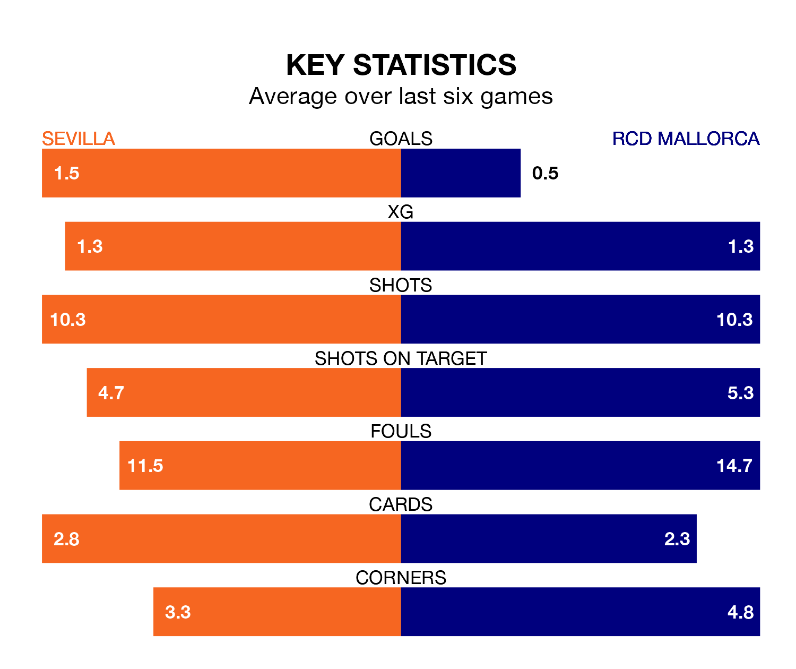

RCD Mallorca travel to Sevilla on late Monday in La Liga.
The visitors come into the game on the back of a defeat in their last match, having lost to Real Madrid 1-0 at home.
Sevilla, meanwhile, won their last match, 2-0 against UD Las Palmas, with their goals scored by Youssef En-Nesyri and Dodi Lukebakio.
In the last 10 years, Sevilla and Mallorca have played each other on seven occasions. Sevilla won four of them, Mallorca one, and they drew twice.
On average, Sevilla scored 1.1 goals and Mallorca 0.3 in those matches.
Their last meeting was on December 9, when Mallorca won 1-0 at home.
With 25 goals in 31 games so far this season, Mallorca are the league's joint-third-lowest scorers with 0.8 goals per game. But they are conceding fewer than average too, letting in 36 goals at a rate of 1.2 per game.
Sevilla, meanwhile, are average scorers, with 1.3 goals per game. They have conceded 1.4 goals per game.
The visitors are 15th in the table after 31 games, of which they have won six and drawn 13, earning 31 points.
The home team are two places ahead of Mallorca in 13th, with eight wins and 10 draws putting them on 34 points.
Sevilla are in mixed form in La Liga, with three wins and a draw from their last six games.
With two wins and two draws over that period, Mallorca's form is slightly worse – they have taken eight points from 18, compared to Sevilla's 10.
Updated: 11:31 (UTC), 15/04/24